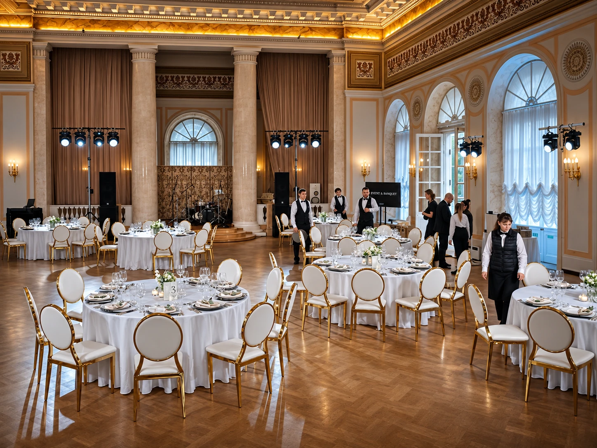

Свет и звук на свадьбу.
Сбор гостей, тосты, первый танец и вечер с кавер-группой проходят в одном зале. У каждого момента свой свет и свой звук.
До прихода гостей
На фото — свадебный зал перед торжеством. По расположению столов видно, где оставить проходы, откуда снимать пару и куда направить свет, чтобы он не бил гостям в глаза. Эти детали обсуждаем с организатором при подготовке.
Для небольшого ресторана часто достаточно мягкой заливки и нескольких акцентов. Если у площадки уже есть приборы, сначала выясняем, какие из них можно использовать.

От первого танца до вечеринки
Для первого танца важны музыка и место, где окажется пара. Заранее обсуждаем выход и финал, отмечаем музыкальные переходы. Во время программы художник ведёт свет с пульта и подстраивается, если ведущий меняет тайминг.
В ролике можно посмотреть свадебный свет в движении. Для своего вечера пришлите композицию или пример настроения, которое вам близко.
Что понадобится для расчёта
Дата и название площадки, примерное число гостей и план вечера. Для церемонии в отдельной зоне сообщите, где она проходит. Если выступает группа, приложите райдер: по нему согласуем микрофоны, акустику и бэклайн.